## Angular Universal 🚀 <br /> <br /> <div class="logo"> <img src="assets/angular/angular-logo.png" class="image-logo" /> </div> <br /> <em> Robert Stevens Pineda (stevenscol.co) <!-- .element class="footer" --> </em> --- ### ¿Qué es Angular? Es una plataforma de desarrollo construida en TypeScript para desarrollar aplicaciones web SPA (Single Page Application). <!-- .element class="fragment" --> --- ### ¿Qué nos ofrece? - Un framework basado en componentes. <!-- .element class="fragment" --> - Una colección de librerías que abarcan múltiples características. <!-- .element class="fragment" --> - Un conjunto de herramientas de desarrollador que nos ayudan en el proceso de construcción de aplicaciones web. <!-- .element class="fragment" --> --- ### Páginas web tradicionales (SSR) - Existen múltiples puntos de entrada o documentos HTML para cargar las vistas de la aplicación.<!-- .element class="fragment" --> - El conjunto de páginas disponibles en la aplicación son elaboradas (rendering) y entregadas por el servidor mediante una recarga en el navegador.<!-- .element class="fragment" --> --- - Experiencia de usuario inicial más rápida.<!-- .element class="fragment" --> - Habilita el SEO (Search Engine Optimization) en la aplicación.<!-- .element class="fragment" --> --- Ciclo de vida tradicional de una página web <!-- .element class="fragment" --> <div class="image-full-size fragment"> 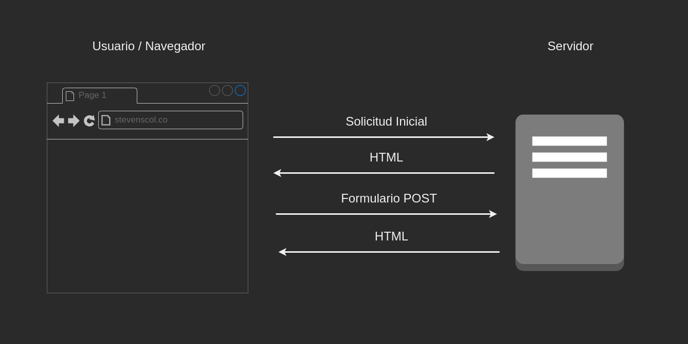 <em>Server Side Rendering (SSR)</em> </div> --- ### Single Page Application (SPA) <!-- .element class="fragment" --> - Página o aplicación web que solo tiene un documento HTML como punto de entrada. <!-- .element class="fragment" --> - El total de las páginas o características de la aplicación son renderizadas en el navagador web. <!-- .element class="fragment" --> - No se requiere realizar recargas en la aplicación o páginas para interactuar. <!-- .element class="fragment" --> --- - Experiencia intermedia y final del usuario más rápida.<!-- .element class="fragment" --> - Hábilita el SEO solo para el punto de entrada de la aplicación. <!-- .element class="fragment" --> --- Ciclo de vida de una SPA <!-- .element class="fragment" --> <div class="image-full-size fragment"> 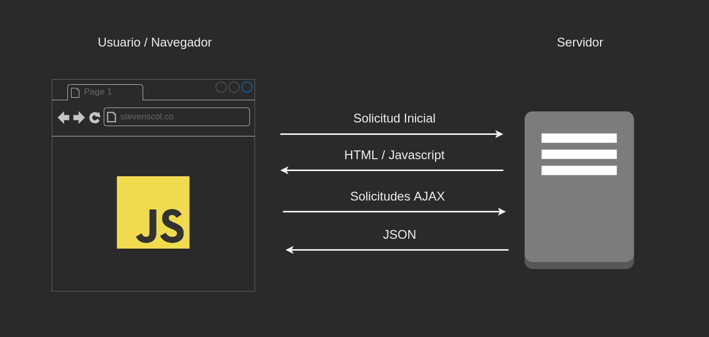 <em>Client Side Rendering (CSR)</em> </div> --- ### Angular Universal<!-- .element class="fragment" --> Nos permite dotar de superpoders a Angular, permitiéndonos unificar lo mejor de las aplicaciones web tradicionales (SSR) y las SPA (CSR).<!-- .element class="fragment" --> <div class="logo fragment"> </div> --- ### ¿Por qué Angular Universal?<!-- .element class="fragment" --> --- ###### SEO<!-- .element class="fragment" --> ##### SEO<!-- .element class="fragment" --> #### SEO<!-- .element class="fragment" --> ### SEO<!-- .element class="fragment" --> ## SEO<!-- .element class="fragment" --> # SEO<!-- .element class="fragment" --> --- <div class="image-full-size fragment"> 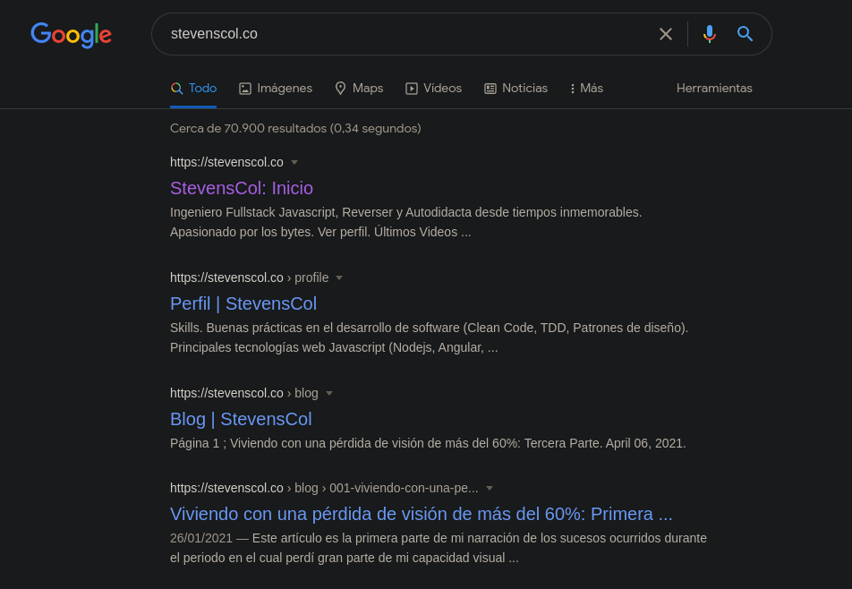 <em>Indexación de páginas web</em> </div> --- <div class="image-full-size fragment"> 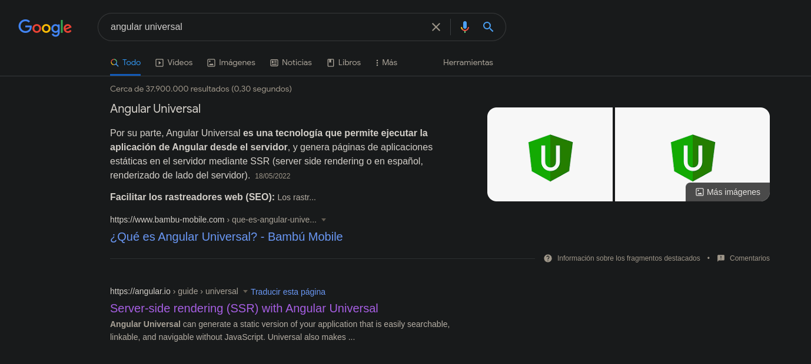 <em>Ejemplo de SEO</em> </div> --- <div class="image-full-size portrait fragment"> <em>Redes Sociales</em> </div> --- ### ¿Cómo añadir Angular Universal? 🤔<!-- .element class="fragment" --> --- <!-- .slide: data-background="#151522" --> ``` > ng add @nguniversal/express-engine ``` <div class="image-full-size"> 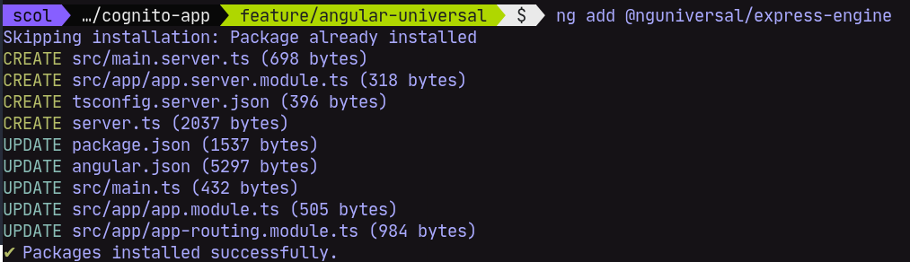 </div> --- <!-- .slide: data-background="#151522" --> ``` server.ts ``` <div class="image-full-size"> 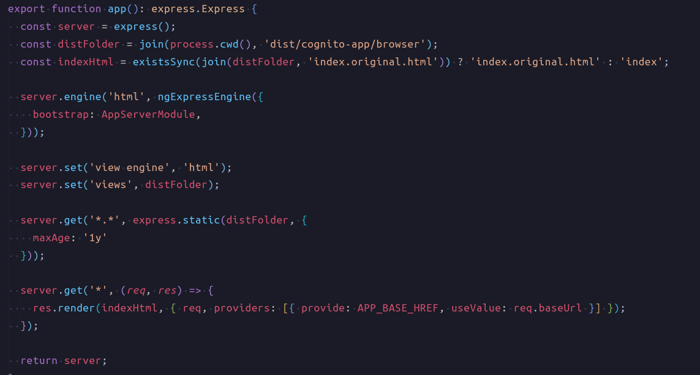 </div> --- <!-- .slide: data-background="#151522" --> ``` package.json (scripts) ``` <div class="image-full-size"> 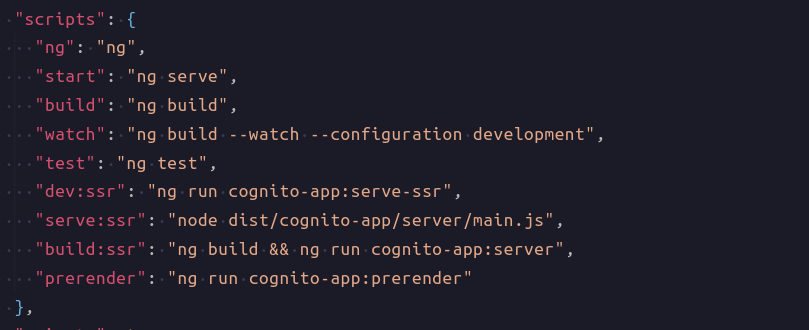 </div> --- <!-- .slide: data-background="#151522" --> ``` > npm run dev:ssr ``` <div class="image-full-size"> 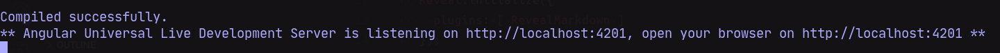 </div> --- ### Comparativa 🔥 CSR / SSR <br /> <br /> https://github.com/StevensCol/cognito-app --- ``` app-routing.module.ts ``` <div class="image-full-size"> 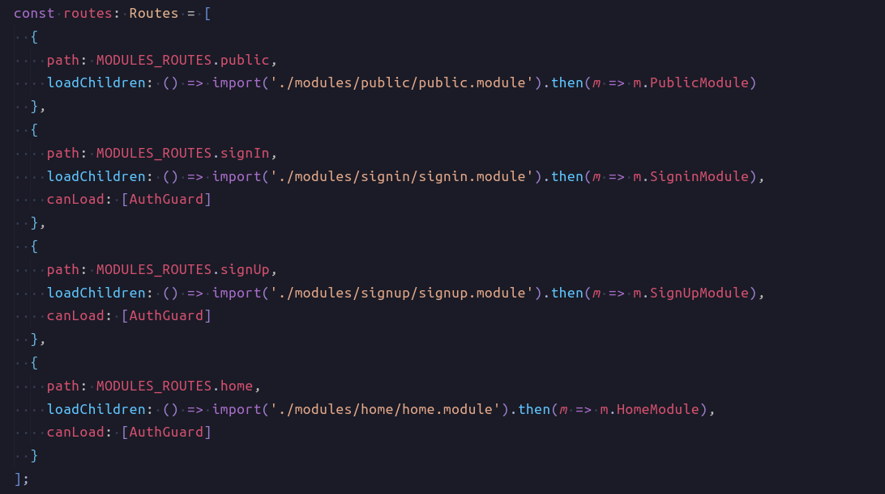 </div> --- ``` localhost:4200/ ``` <div class="image-full-size"> 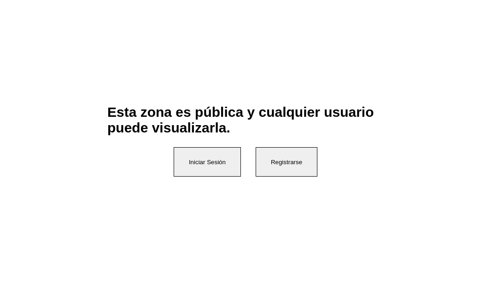 </div> --- ``` localhost:4200/signin ``` <div class="image-full-size"> 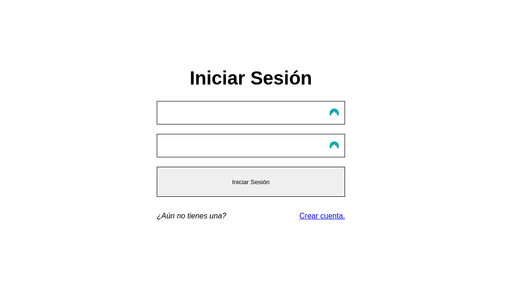 </div> --- ``` localhost:4200/home ``` <div class="image-full-size"> 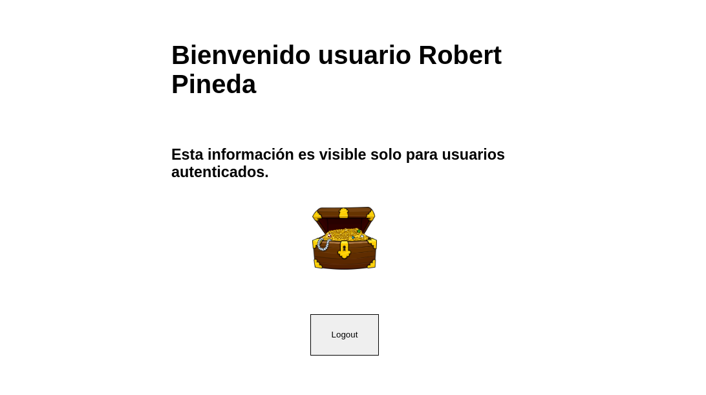 </div> --- #### CSR (Client Side Rendering) --- ``` > curl localhost:4200/ > curl localhost:4200/signin > curl localhost:4200/home ``` <div class="image-full-size"> 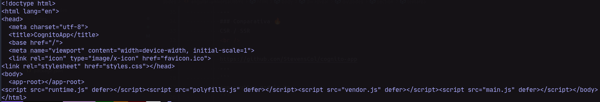 </div> --- #### SSR (Server Side Rendering) --- ``` > curl localhost:4201/ ``` <div class="image-full-size"> 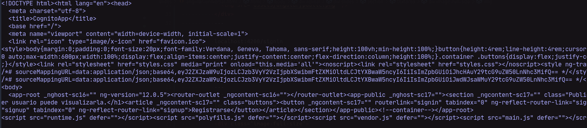 </div> --- <div class="image-full-size"> </div> --- ``` > curl localhost:4201/signin ``` <div class="image-full-size"> 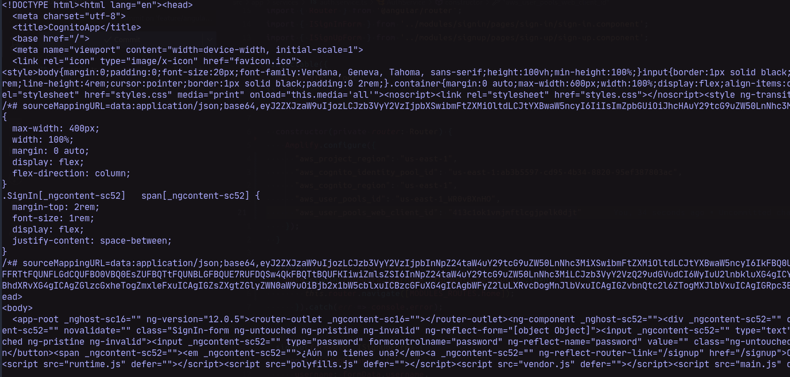 </div> --- ``` > curl localhost:4201/home ``` <div class="image-full-size"> 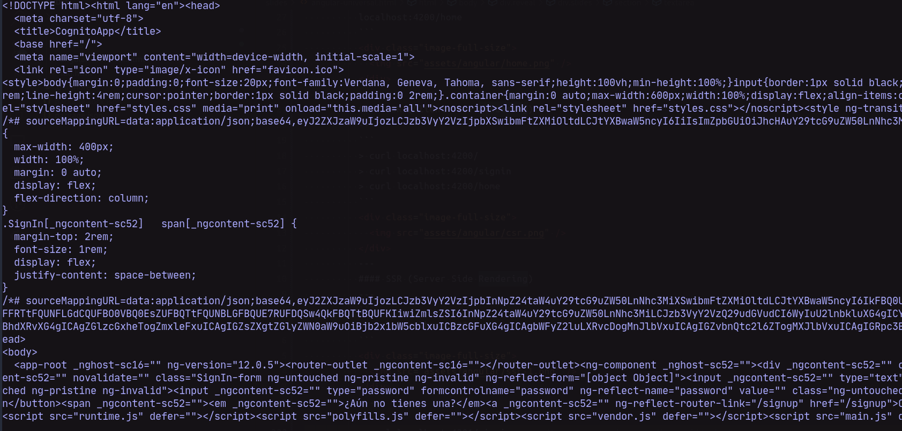 </div> --- <div class="image-full-size"> </div> --- #### ¿Preguntas? --- #### ¡Gracias!